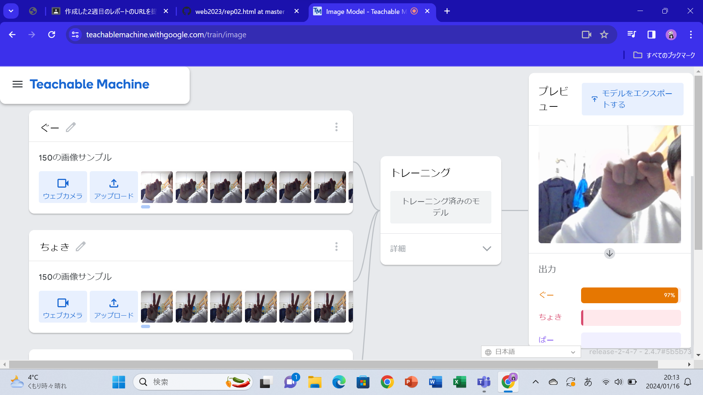
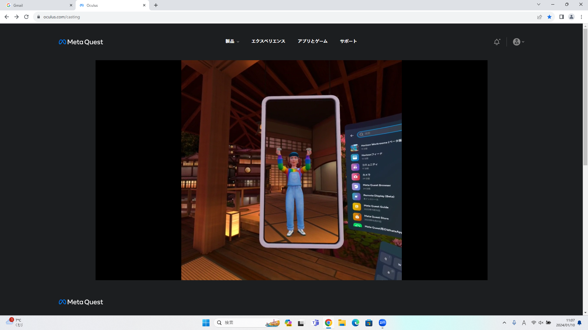

第2週目
2-1 １週目のレポートをHTMLで作る
１週目のレポート
1.内容
第1週目の実習の内容や感想をウェブサイト上に書いた
2.感想
最初は、文字がたくさんあって難しかったけど、実際にできると楽しいと感じた。
2-2 機械学習体験

1.内容
人工知能につて学んだ。
teachable machineというサイトで、グー、チョキ、パーを判別するプログラムを作った
2.感想
人工知能が、大いに活躍するだろうといわれている時代を生きる私たちにとって、
非常に重要な内容だと思った。
私たち人間の学習方法と、機械の学習方法（機械学習）とでは大きく違い、
人間は、まず最初に解き方を学習するが、機械は、いくつかの練習問題と、
その回答となるデータから学習することが分かった。
2-3 VR（バーチャルリアリティー：Virtual Reality）会議室の体験

1.内容
VRゴーグルを装着し、仮想空間上で会議をしたり、絵をかいたりした。
2.感想
実際に会社の会議などが、仮想空間上で行われる時代がいつか来ると思った。
旅行中や、会社に行けない時でも会議に参加できるので、実用化されればとても便利だと思った。